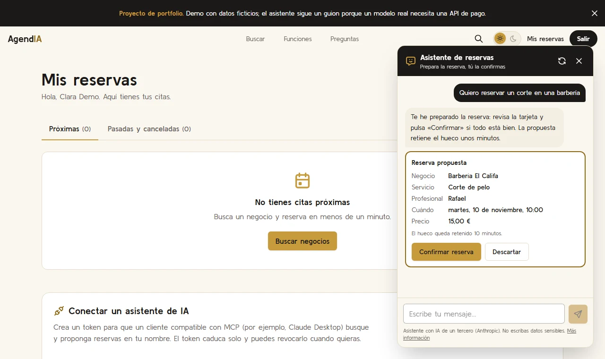
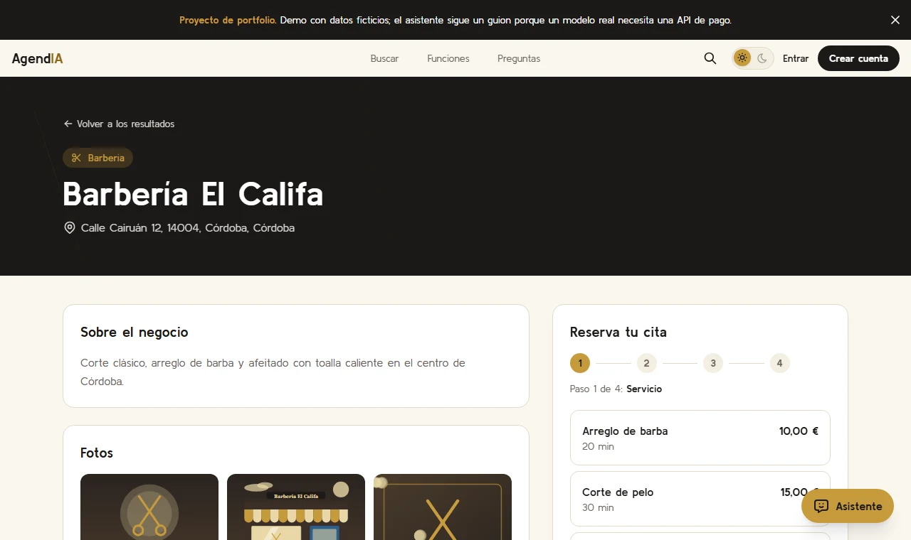
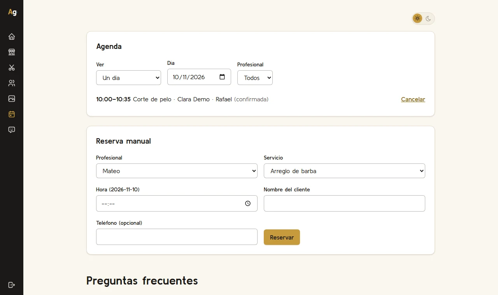

AgendIA
Marketplace de reservas con asistente de IA. Los negocios se dan de alta y gestionan su agenda; los clientes reservan con una interfaz de toda la vida o hablando con el asistente.



- 51casos de evaluación del asistente, incluida la inyección de prompts
- Todaslas rutas de la API con test de aislamiento entre negocios
- 0 €de infraestructura: la demo es estática y vive en GitHub Pages
-
El asistente propone, el servidor confirma
Al modelo solo se le exponen herramientas de lectura y de propuesta. Aunque alguien lo manipulara con texto malicioso, no podría reservar.
-
Servidor MCP propio
Cualquier cliente compatible, como Claude Desktop, puede buscar y reservar con tokens que caducan, se revocan y llevan permisos separados.
-
Aislamiento entre negocios
El identificador del negocio sale siempre de la sesión. Un test recorre todas las rutas de la API y el CI falla si falta alguna.
-
Emails que no se pierden
Cada reserva anota un evento en la misma transacción (patrón outbox) y n8n lo entrega con reintentos.
En la demo el asistente sigue un guion, porque un modelo real necesita una API de pago. El código y la configuración del modelo están en el repositorio.